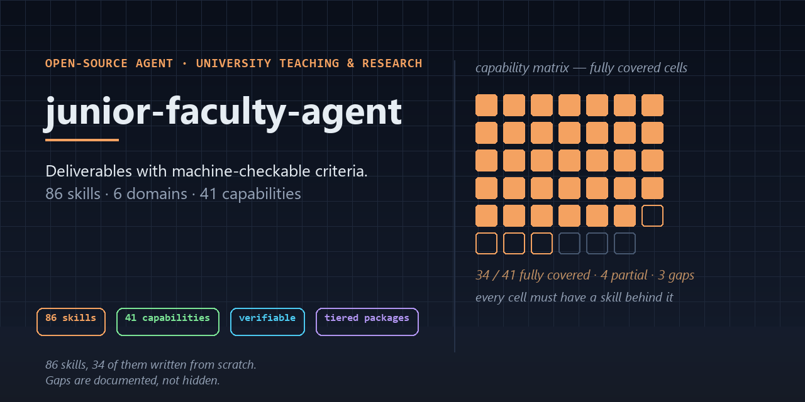

An open-source local agent for university teachers and researchers. It writes lesson plans, exam papers, grant applications and journal submissions — and for every one of them it states the acceptance criteria as machine-checkable checks, so “done” is a verdict, not an opinion.
git clone https://github.com/242742532Celestia/junior-faculty-agent.git
cd junior-faculty-agent
# self-check before you trust it with your own material
python scripts/selftest.py
python scripts/verify_repo.py

The agent starts from an outline that is the single source of truth. Every downstream artefact is checked against it, so the handout cannot drift away from the lesson plan.
Lesson plan, exam paper, slide deck, handout — plus a self-check report that states which criteria passed and which need a human.
56 mutations are seeded into the checks; each one must be caught by the check it belongs to. A guard that cannot fail is not a guard.
teaching, research and full builds, each with a MANIFEST and checksums, so you can audit the archive before you unpack it.
Gaps are documented rather than hidden: the capability matrix marks 4 partial and 3 missing cells, and the README says which ones. No commercial-only skill is included in the open-source distribution.